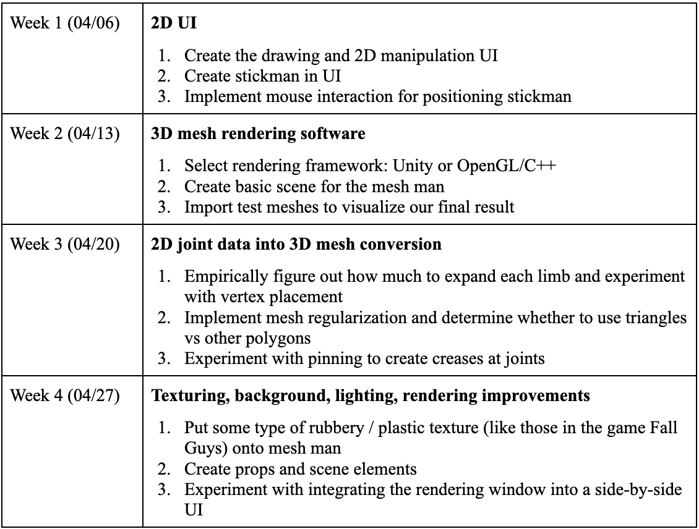

Meshman aims to design an interactive UI that allows users to manipulate a 2D stickman through its joints, which is then transformed into a 3D character using mesh generation and regularization techniques. The system will interpret the 2D input, map it to a 3D skeletal structure, and generate corresponding meshes to create a fully rendered 3D stickman model with joints.
Project Description
In order to generalize the creation of a 3D mesh from a 2D drawing, we must first segment the body parts in a way that enables hierarchical modeling. In this way, we are also able to clearly define the boundaries at which a joint's edge should crease. Since we want to create joints that we can move around, it is also necessary to generate additional mesh geometry in order to accommodate the expansion of the outer layer. Lastly, it will be challenging to create an UI that enables the user to create these poses. We imagine this tool will be a proof of concept to intuitively bridge 2D and 3D modeling!
Goals and Deliverables
We plan to deliver an interactive UI with moveable joints and limbs that correspond to a render of a generated, regularized 3D mesh of the stickman. This includes a basic UI for users to move the 2D model, a lit render of a mesh, and mesh updates when the stickman is moved by the user.
With extra time, we hope to deliver an environment for the 3D mesh render for background and vibes, and textures to the 3D model. We hope to give the stickman more personality. As a long shot, we may try to embed the UI in a website rather than running it locally.
To evaluate the quality and performance of our system, we want to focus heavily on the responsiveness of the rendering with UI input. In particular, we will measure the time it takes for both parts of the equation: how long it takes for the mesh generation / regularization and how long it takes to render.
For our demo, we use the interactive UI to manipulate the 2D stickman and drag it around into different positions, which will then transform into a 3D character with mesh generation. We will create images by visualizing the 3D mesh from the same angle as the 2D image with a basic lighting source.
Schedule

Resources
Among other resources, we will use:
Lecture slides
Lecture 5: texture mapping
Lecture 8: mesh representation and geometry processing (subdivision, regularization)
Lecture 16: camera and lenses (DOF)
Skeletal Subspace Deformation
Using a skeleton to rig how the mesh moves and also creates displacement maps for smoother joints
https://web.cecs.pdx.edu/~fliu/papers/eg2003.pdf
Medial Axis Transform
Using a skeleton, expand laterally to create volume
https://3d.bk.tudelft.nl/courses/backup/geo1015/2018/data/geo1015_09.pdf
Keenan Crane Website
Personal computers/instructional accounts for compute
Blender/Unity/CS 184 3D renderer